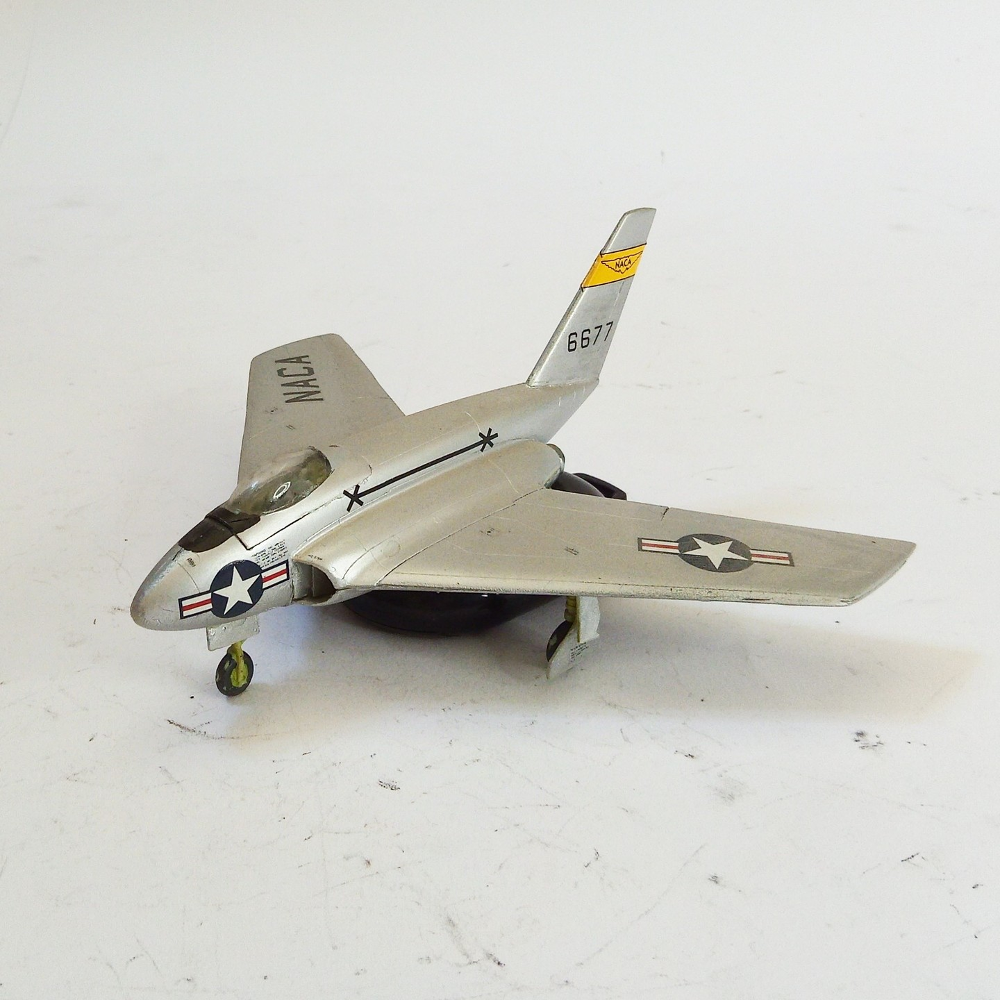

Aerei · scale model archive
Northrop X4 Bantam
Northrop X4 Bantam — Kit: MPM, Scale: 1/72. Experimental A/C built in 1948 #1/72 #MPM

Photo gallery
English description
Experimental A/C built in 1948
#1/72 #MPM
Descrizione italiana
Sperimentale aereo costruito in 1948.